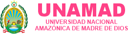

Acceso del moderador. Los tótems se abren con sus enlaces de visualización.
Conectando con el debate…
En «Configurar debate» elige el modo: un tótem por candidato, o pantalla única (una para el público y otra para los candidatos). Agrega hasta 8 candidatos y define las rondas.
Pulsa «Enlaces de tótems» y abre cada enlace completo una vez en su equipo. Ese equipo lo recuerda 30 días: después basta con abrir la dirección corta (?pantalla=N). No se necesita la contraseña del moderador.
Configura la pantalla en orientación vertical y activa «Pantalla completa». Para un tótem sin barras del navegador, crea un acceso directo de Chrome con chrome.exe --kiosk "https://…/?pantalla=1". El tótem evita que la pantalla se apague y oculta el cursor.
chrome.exe --kiosk "https://…/?pantalla=1"
Elige la ronda, inicia el turno y usa «Siguiente orador» (tecla →) para pasar la palabra. En pantalla única, pulsa «Presentar en pantalla» para mostrar al candidato y ▶ para iniciar su tiempo. Con este panel abierto, las pantallas se sincronizan cada segundo. Abre el panel unos minutos antes: cada tótem está listo cuando su tarjeta indica «● Conectado».
El orden define el tótem: el primero se muestra en el tótem 1. Tiempo en segundos.
Al elegir una ronda en el panel, todos los cronómetros toman su duración y los tótems muestran su nombre.
Guardar reinicia los cronómetros con los tiempos indicados. El informe de tiempos se conserva.
Sin imagen se muestra el escudo de la UNAMAD sobre el fondo institucional. JPG, PNG o WebP; por ejemplo, el afiche del evento.
Se detendrán los turnos y se restaurará el tiempo asignado a cada candidato.
Cabecera UNAMAD y diseño común para los tres candidatos. Personaliza el color de acento si lo necesitas.
Usa una foto de buena calidad, de preferencia vertical.
JPG, PNG o WebP · Hasta 25 MB
La imagen y el diseño se guardan en PostgreSQL y se muestran en los tótems conectados.
Abre cada enlace completo una vez en el navegador de su pantalla; ese equipo lo recordará 30 días. Los enlaces permiten visualizar, no controlar.